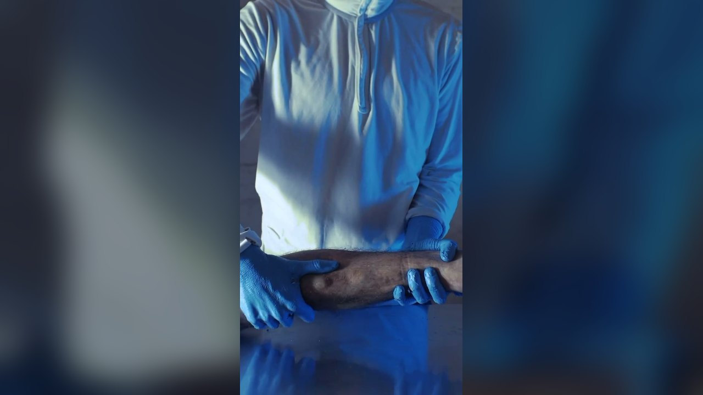
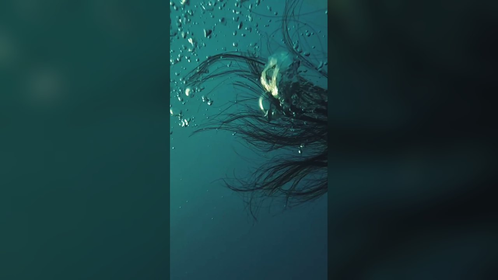
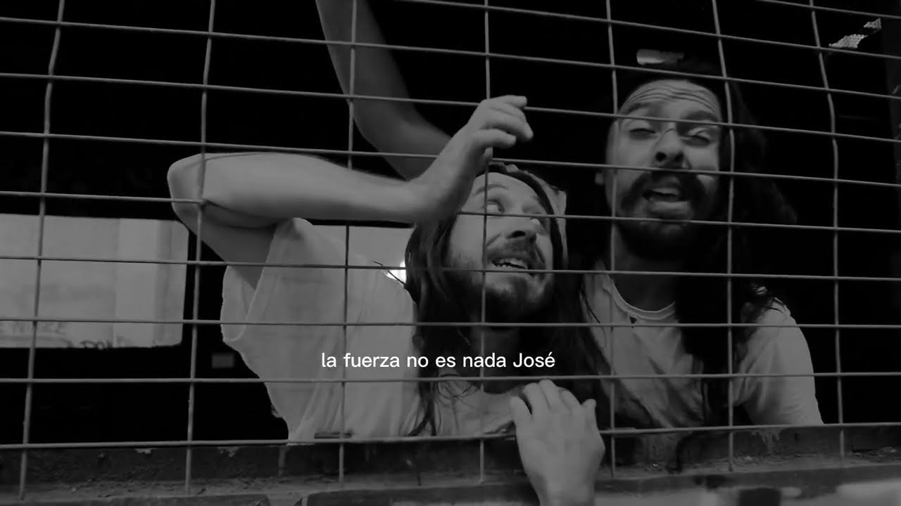
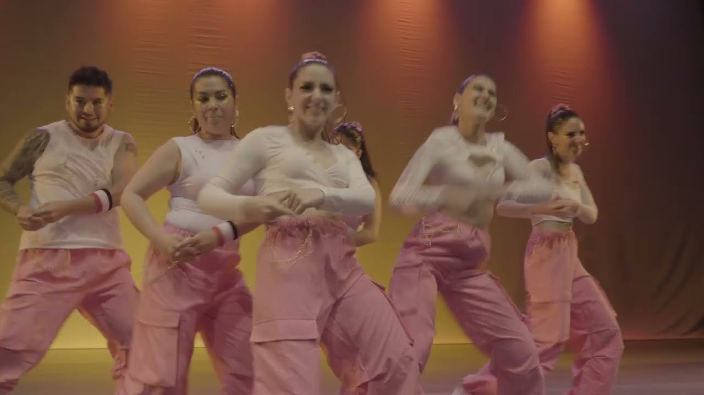
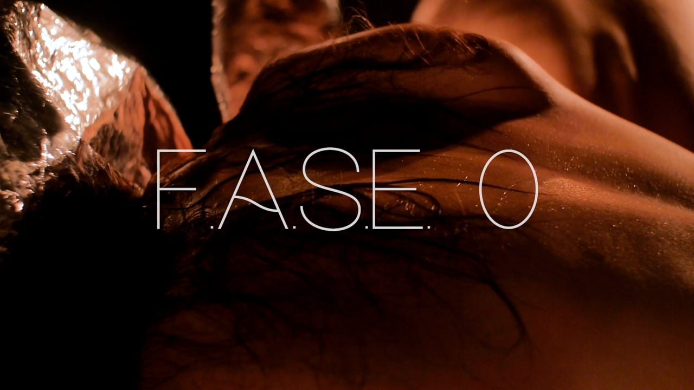

Auf Instagram ansehenTIBIA
2025Performance-TeaserValparaíso, Chile
- Konzept / Performance
- Cristian Reyes Montes, Cristóbal B. Corvalán
- Design / Technik
- José Farías
- Choreografische Assistenz
- Rocío Rivera Marchevsky, María Soledad Medina
- Bild
- Felipe Díaz Galarce

Auf Instagram ansehenMEMBRANA
2024Teaser zur TanzpremiereGAM, Santiago, Chile
- Video
- Felipe Díaz Galarce, Javi Robledo Karapas, Gaby Paz
- Förderung
- Fondo Nacional de Fomento y Desarrollo de las Artes Escénicas 2023

Jetzt ansehenAl Caer la Noche — desaparecidxs
2023PerformanceValparaíso, Chile
- Idee
- Laboratorio Eco-anónimo (LEA)
- Kamera
- Felipe Díaz Galarce
- Schnitt
- Evve Wittmann
- Performance & Co-Regie
- Nacho Romero

Jetzt ansehenArtidanza
2023Tanz-ReelChile
- Kamera
- Felipe Díaz Galarce

Jetzt ansehenF.A.S.E. 0
2022TrailerChile
- Produktion
- Hangar Espacio
- Kamera
- Felipe Díaz Galarce